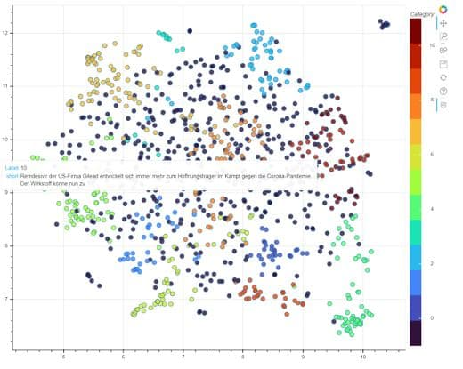
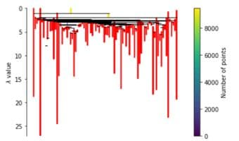
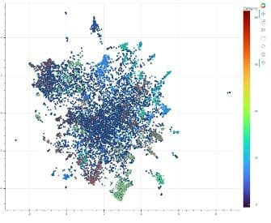
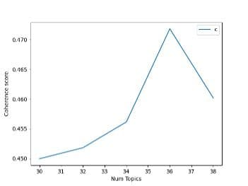

Entwicklungsprotokoll¶
Recherche¶
Topic Model¶
Iteration 1¶
- Artikel Embedding mit SentenceTransformer(‘T-Systems-onsite/cross-en-de-roberta-sentence-transformer’)
- nur erste 1000 Artikel aus Effizienzgruenden
- Dimensionalitätsreduktion mit UMAP
- n_components=10, n_neighbors=18
- Clustering mit HDBSCAN
- Pro Artikel -> Topic
- min_cluster_size=15, prediction_data=True, min_samples=6)
- Visualisierung durch scatterplot mit bokeh 
Iteration 2¶
- Artikel Embedding mit SentenceTransformer(‘T-Systems-onsite/cross-en-de-roberta-sentence-transformer’)
- Artikelcharakteranzahl auf 800 limitiert
- Alle Artikel einbezogen
- Dimensionalitätsreduktion mit UMAP
- n_components=10, n_neighbors=18
- Clustering mit HDBSCAN
- Pro Artikel -> Topic
- min_cluster_size=15, prediction_data=True, min_samples=6)
- Visualisierung durch scatterplot mit bokeh
Iteration 3¶
- In I3_topicmodel_from_csv.ipynb werden Embeddings nun direkt aus copy_artikel_embedded_800 verwendet
- Output: I3_output_df.csv
- Enthält zusätzlich die Wahrscheinlichkeiten der Clusterzugehörigkeit für jeden Artikel
- Artikel Embedding mit SentenceTransformer(‘T-Systems-onsite/cross-en-de-roberta-sentence-transformer’)
- Text pro Artikel auf 800 Zeichen limitiert (Durchschnittsparagraphenläne: 200 Wörter, Durschnittliches Deutsches Wort durchschnittlich 5 Zeichen, ausgenommen space), dafür Limitation aus Iteration 1 von 1000 Artikeln aufgehoben und alle Artikel einbezogen -> 9570 Kurzartikel
- Dimensionalitätsreduktion mit UMAP
- n_components=10, n_neighbors=18
- Clustering mit HDBSCAN
- Pro Artikel -> Topic
- min_cluster_size=15, prediction_data=True, min_samples=6)  
- Ranking (nach c TF IDF und TF) mithilfe von a für jedes einzele Cluster erstellen
Iteration 4¶
Iteration 5¶
LDA 
Retrieve¶
R1¶
- Semantische Suche (Retrieval)
- Mit SentenceTransformer ‘T-Systems-onsite/cross-en-de-roberta-sentence-transformer’
- Top 10 Resultate ausgeben
R2¶
Task: Schrittweise Verfeinerung der residuals
- Ausführung des Clusterings wie in I2, jedoch mit skimming approach nachdem qualitativ hochwertige Cluster abgeschöpft wurden, wird Clustering erneut mit neuen Parametern durchgeführt
- Qualitativ Akzeptabel: 3 Iterationen (nachher Clusteringfähigkeit ausgeschöpft)
Labelled 4454 successfully in I0
Segmented into: 83 Clusters.
Labelled 2055 successfully in I1
Segmented into: 38 Clusters.
Labelled 2950 successfully in I2
Segmented into: 3 Clusters.
- Baseline algorithmus für Vorschläge (eingegebene Keywords) implementiert.
- Bewegung im Semantischen Raum, Epsilonhüllen Generierung und Ausgabe der Relevantesten Artikel
R3¶
Overview¶
O1_1¶
- Present each cluster (HDBSCAN and LDA) for annotation showing example texts, cTFIDF, TF
- user annotates clusters with own labels one by one in terminal
- Annotated clusters saved to 2 DFS
- O1_df_annotation_hdbscan.csv
- O1_df_annotations_lda.csv
O2¶
Use for annotating directly in csv table.
- Task: Prepare tables for annotation
- Annotated clusters saved to O2_df_annotation_hdbscan.csv and O2_df_annotation_lda.csv